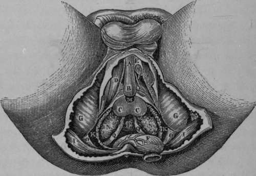
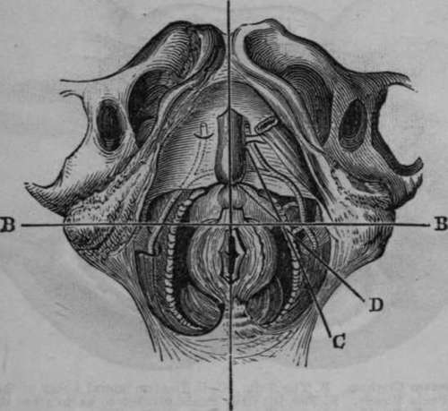

The Lateral Operation For Lithotomy
Description
This section is from the book "Anatomy Of The Arteries Of The Human Body", by John Hatch Power. Also available from Amazon: Anatomy of the Arteries of the Human Body, with the Descriptive Anatomy of the Heart.
The Lateral Operation For Lithotomy
The rectum having been previously emptied by an enema, and the patient desired to retain his urine, the hair of the perineum should be shaved, and the presence of the stone again ascertained. A grooved staff is then to be introduced into the bladder, and the patient tied, as already directed when speaking of the dissection of this region, and laid on his back, on a table of convenient height. The scrotum being raised by an assistant, the operator, sitting on a low chair, or kneeling on one knee before the patient, holds the staff vertically in his left hand, keeping it firmly drawn upwards, and at the same time making it sufficiently prominent in the perineum. Some prefer committing the staff to the care of an assistant during the operations. The first incision should be commenced about half an inch below the symphysis pubis, or at a point corresponding to about an inch in front of the anus, and carried downwards and outwards on the left side of the perineum, until it has fairly passed the interval between the rectum and tuberosity of the ischium. This incision will divide the superficial fascia and probably the outer portion of the superficial sphincter, and form a wide, gaping wound. The second incision should commence about half an inch lower down than the commencement of the first, and, being carried in the same direction, will almost invariably divide the long perineal artery and nerve, and certainly the transverse artery of the perineum, and will pass between the accelerator urinae and erector penis muscles. It should also be carried sufficiently far back to cut across the transversus perinei muscle. The staff is now to be lateralized, so as to turn its convexity a little to the operator's right side.
The point of the knife should now be passed through the base of the triangular ligament, and then carried behind the bulb into the membranous portion of the urethra, in which the grooved staff will be felt. By passing the knife into this part of the urethra sufficiently behind the bulb, the artery of the bulb will be avoided. As soon as the point of the knife has been made to enter the groove in the staff, it should be moved in it from side to side, in order to be certain that it is fairly in contact with this instrument. In performing this incision into the membranous portion of the urethra, the edge of the knife should neither be turned too much outwards, for fear of wounding the pudic artery, nor too much inwards, lest the rectum be wounded, but in an intermediate direction. The point of the knife must now be passed onwards steadily in the long axis of the prostate gland, giving it, at the same time, by depressing its handle, the direction upwards as if towards the anterior wall of the abdomen; and according as the knife is thus made to move along the groove, the handle of the staff should be simultaneously depressed. In this manner the membranous and anterior part of the prostatic portion of the urethra will be divided; and as the urethra, in passing through the prostate gland, is nearer to its upper than to its lower surface, one-third of the gland will be left above the incision, and two-thirds below. The knife being withdrawn, the first finger of the left hand is to be introduced into the incision, and the nail of it into the groove in the staff. The surgeon now lays aside the first knife, and next employs a long, narrow, probe-pointed knife, which he inserts into the groove in the staff, directed by the fore-finger of the left hand. With this instrument carefully pushed in the direction already indicated, so much of the prostate gland will be divided as may be considered necessary. This knife having been withdrawn, the surgeon should insert the fore-finger of the left hand into the wound in the prostate, and so pass it along the staff into the neck of the bladder. When the surgeon feels that the passage is now clear into the bladder, he should still keep his finger in the same position, its dorsal surface being directed upwards; he will then take the blunt gorget in his right hand, and, resting its concavity on the dorsum of the index finger of his left, he will steadily pass it along into the bladder. The staff should now be withdrawn; the gorget should be then turned so as to direct its concavity upwards, whilst the handle of the instrument should be depressed at the same moment: in this movement the stone may possibly roll along the gorget into the hand of the operator; if not, however, the forceps should be introduced on the concavity of the gorget, one of its blades being directed upwards, and the other, of course, downwards. When this instrument is fairly within the bladder, the gorget may be withdrawn, and the forceps turned so that the blades will look, one inwards and the other outwards. At first it is only to be used as a probe to feel for the stone; when this is ascertained, it is to be taken hold of by its short axis and withdrawn. If it be very large, it may be necessary to break it with Le Cat's forceps, and in this case great care will be necessary to wash out, subsequently, every remaining fragment. If, after the operations, we find the urine does not come through the wound, but through the urethra, and stained with blood, we know that hemorrhage has occurred: we should, therefore, at once remove the clots which block up the wound, and fill it with a sponge, or with charpie, surrounded by a small bag, and secured to a female catheter which has been previously passed through them. The catheter should be made to enter fairly within the bladder, in order to allow the free escape of the urine.
Fig. 50. Represents the Surgical Anatomy of the deep portions of the Male Perineum. The Rectum has been divided and turned back. Left Crus Penis divided and a portion removed.
A, Corpus Spongiosum Urethra. B, The Bulb. C. C,The two lateral Lobes of the Prostate. I), The Right Erector Penis Muscle. E, The left Crus Penis divided so as to show the Artery of the Corpus Cavernosum. F, The Rectum turned down. G, G, The Tuberosities of the Ischia. I, I, The Great Glutaei Muscles. K, K, The Levatores Ani Muscles divided and partly removed. M, The membranous portion of Urethra. N, N, The Vesicular Seminales. O, O, The Great Sciatic Ligament. P, The base of the Bladder. Q, Q, The two Vasa Deferentia becoming tortuous before their termination.
Fig. 51. Represents the Normal Relations of the parts concerned in Lithotomy performed in the Perineal Region. (After Maclise).
A, A, Median line Intersecting B, B, a transverse line dividing the Perineum into the Anterior and Posterior Regions. C, The incision through the integument crossing at an acute angle the incision D, which divides the Prostate.
Continue to:
- prev: The Accelerator Urinae Or Compressor Urethrae Muscle
- Table of Contents
- next: The Internal Pudic Artery